Past Robots
Twelve seasons of robots, from 2014–2015 Cascade Effect to 2025–2026 DECODE.
DECODE
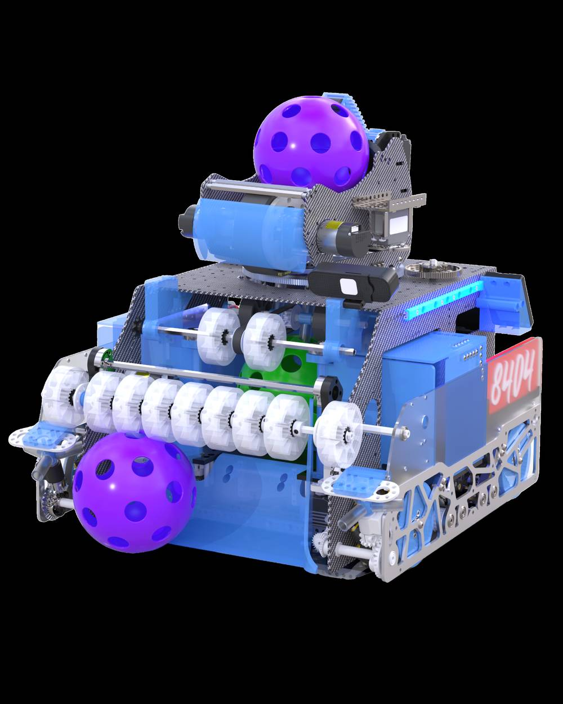
Single-channel artifact handling with color sorting, finished by a 360° goal-locking flywheel turret.
- Custom silicone wheels at 2000 RPM for instant artifact intake
- Single-channel transition with closeable color-sorting chambers
- Dual-motor weighted flywheel at 6000 RPM on 360° V-bearing turret
- April Tag + odometry fusion goal-locking, accurate while moving
- Hybrid carbon fiber + aluminum build; rear-tilt endgame park
Into the Deep
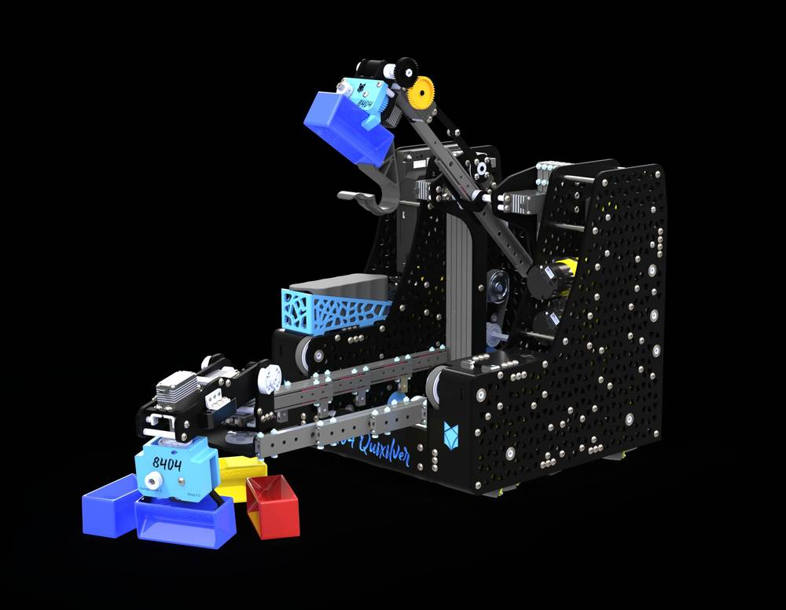
Fast, smooth field motion with a front intake miniturret feeding an output claw for the high basket, coordinated with alliance partners in auto and teleop.
- Ultra-compact 12x12 in parallel-plate drivebase
- Multi-axis intake miniturret
- Reaches high basket and rung
- Custom vision algorithms for contested submersible samples
Centerstage
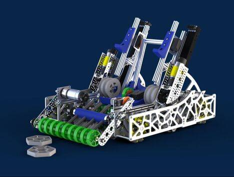
Most advanced parallel-plate drivebase yet; picks up two pixels at a time and outputs each precisely on the backdrop.
- Parallel plate drivebase
- Auxiliary intake mechanism
- Fits through the middle gate
- Downward-flipping output flush with the backdrop
Powerplay
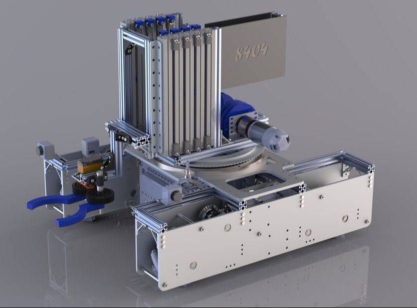
Built for high-speed cone cycling with a differential lift and turret, scoring on any junction height from one stable position.
- Differential cascading lift
- 360-degree continuous turret
- Automated cone alignment
- Mecanum drivebase
Freight Frenzy
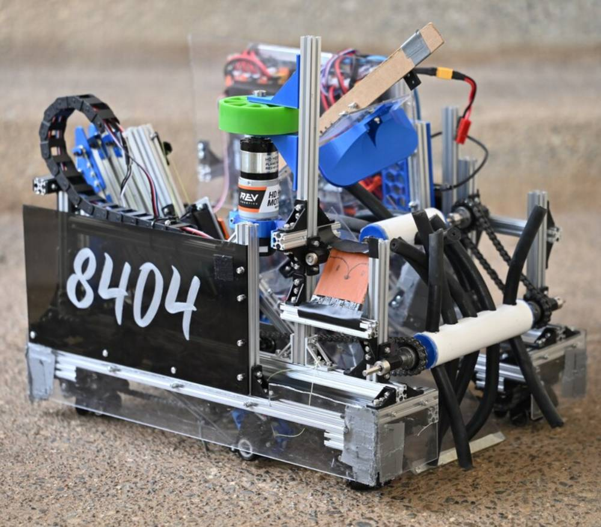
Rapid freight collection and delivery to shipping hubs with multi-directional intake and a precise carousel spinner.
- Omni-directional intake
- Variable-height linear slide lift
- Independent carousel spinner
- Vision-based freight detection
Kunai
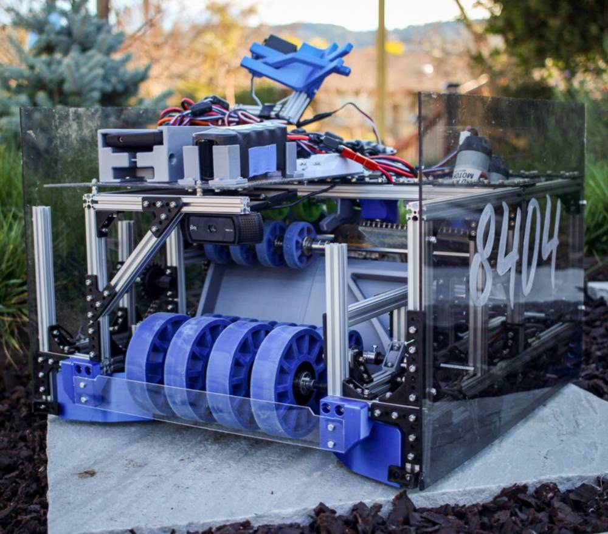
Named after a chained Japanese weapon: triple compliant-wheel intake plus flywheel shooting, with a wobble-goal claw.
- 3D-printed ramp and hopper
- Three sets of compliant wheel rollers
- Single flywheel on two ultraplanetary motors
- 3D-printed guide rails
Kumo
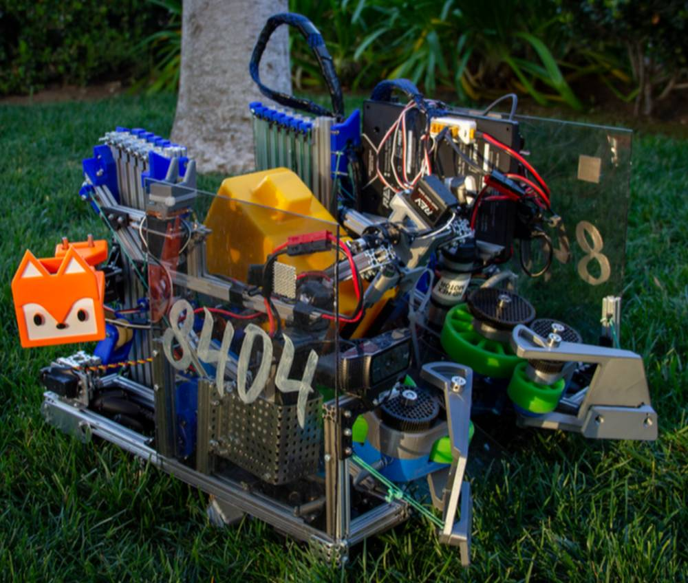
Named for the Japanese word for spider: odometry-tracked, eight motors, three-axis claw, compliant intake, linear lift.
- Mecanum drive
- Linear lift system
- Capstone mechanism
- Compliant wheel intake
Pyxis
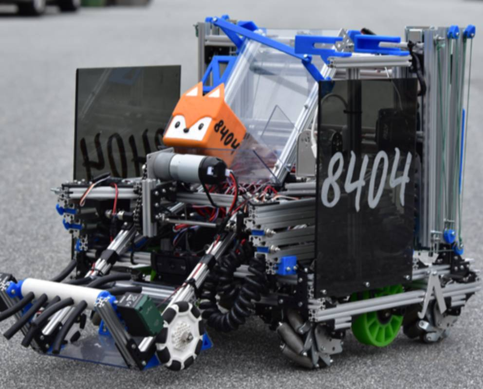
Named for a constellation and mariner's compass: dual linear slides and mecanum drive with sensor-fusion navigation for either side of the field.
- Linear-slide mineral intake
- Linear lift system
- Mecanum drive
- Aluminum hook + team marker
Rexxa
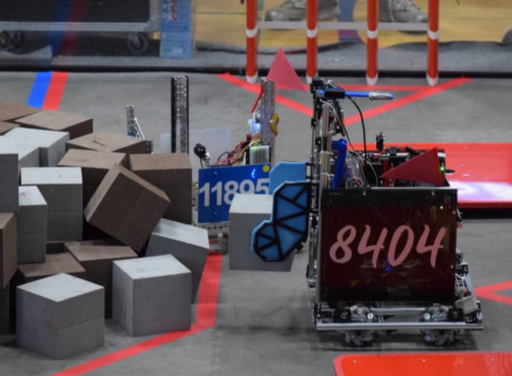
First REV Robotics season with mecanum base; clamp arms like a T-Rex used memory foam to hold two glyphs at once.
- Strafing agility
- Custom 3D-printed clamps with memory foam
- Extrusion linear lift
- SpiderWire lift rigging
Hachi
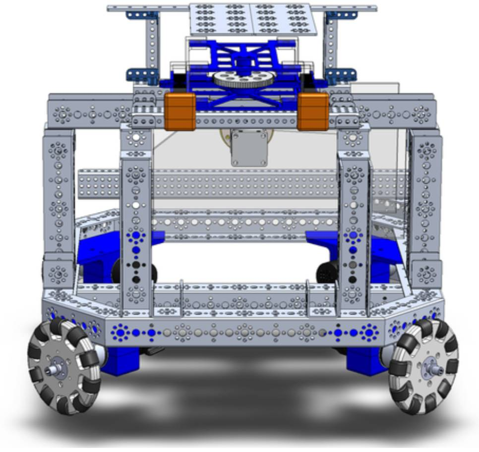
Eight-sided button-pressing robot — Hachi, Japanese for eight. Chose loyalty over the joke name.
- Octagonal omni-base
- CAD beacon pusher
- Particle launcher
Vlad
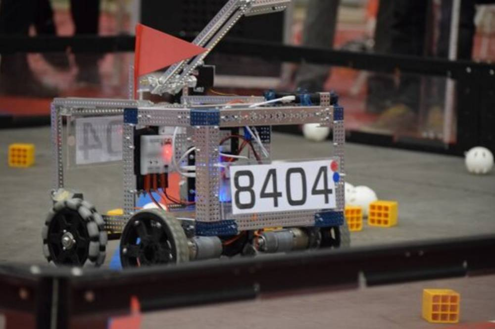
Climber dunker with a horn-like hook — Vlad, the pirate unicorn that impales no one.
- Extreme field agility
- Efficient climber dunking
Cubert
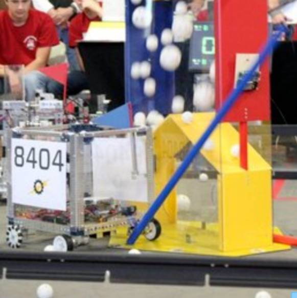
First year: a perfectly cubical base maximizing the 18 in limit with room to grow.
- Extreme field agility
- Efficient goal mover